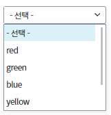
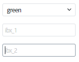
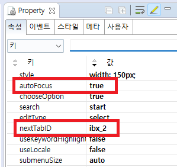
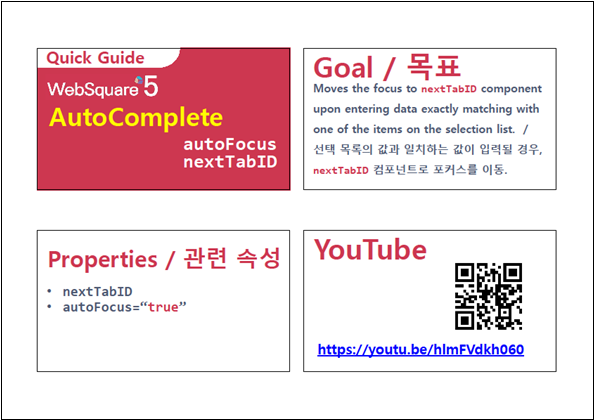

AutoComplete의 선택 목록의 값과 일치하는 값이 입력될 경우, nextTabID에 입력된 컴포넌트로 포커스를 자동으로 이동하도록 설정할 수 있습니다.
선택 목록의 값과 일치하는 값을 입력하면 설정한 컴포넌트로 포커스를 이동
화면의 AutoComplete을 선택해 설정된 입력값을 확인합니다.
[브라우저(Chrome) 실행 예시]

ex) red, green, blue 등
[브라우저(Chrome) 실행 예시]

1. AutoFocus="true"
2. nextTabId="포커스를 이동할 컴포넌트ID"
그림 1.웹스퀘어5 SP5 스튜디오의 Property 탭 예시

[소스 코드 예시]
<w2:autoComplete ... nextTabID="ibx_2" autoFocus="true" ... >
//중간 생략
</w2:autoComplete>autoFocus
nextTabID
[웹스퀘어5 SP5 개발 가이드] 포커스 이동
링크 : https://docs1.inswave.com/sp5_user_guide/8df43d1f59fab704#a131cbc7f35e9859
AutoComplete - autoFocus & nextTabID
링크 : https://youtu.be/hlmFVdkh060
